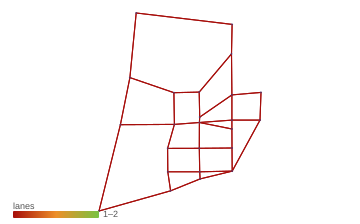
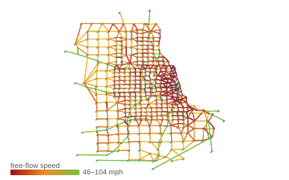
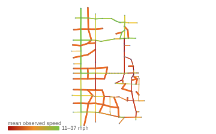

Interactive dashboards — the base HTML
All dashboards live in one browsable folder: docs/dashboards/ · plus 1 corridor state-view set(s). Self-contained & offline; rebuild with python renderers/build_dashboards.py.
Generated by AI — ask for more. Every page here was produced by the assistant from a GMNS network plus a link speed /
link_performance table (or an AI solver's output). Ask it to generate the same views for additional data — e.g. the ITS I-95 corridors, or other years of the same corridor. Provide the network + speeds and name the corridor and date; the calendar view already spans a whole year, so multi-year is just another run.
Classic transportation test network — the standard TAP benchmark.

Regional sketch network with demand, assignment and link performance.

Real signalized corridor; links colored by observed mean speed.
Additional: plot4gmns static figures static
Supplementary static images — the plot4gmns catalog reimplemented natively (no pandas/Shapely/keplergl): network nodes/links/zones/POI, by-attribute, distributions, demand matrix + OD, lanes, movements.


Additional: MOE & analytics figures (report-ready) static
Traffic-Speed bandwidth, space-time speed/density contours, corridor profiles, PeMS/RITIS bottleneck ranking, global city-store coverage. Intuitive green(fast)->red(slow).


Generate for any dataset (6 demos)
Every dataset produces a self-contained dashboard (base) + a static figure set (additional):
- 01_sioux_falls —
python ai-gen/gui4gmns.py datasets/01_sioux_falls->datasets/01_sioux_falls/dashboard.html+figures/ - 02_chicago_sketch —
python ai-gen/gui4gmns.py datasets/02_chicago_sketch->datasets/02_chicago_sketch/dashboard.html+figures/ - 03_chicago_regional —
python ai-gen/gui4gmns.py datasets/03_chicago_regional->datasets/03_chicago_regional/dashboard.html+figures/ - 04_arc_atlanta —
python ai-gen/gui4gmns.py datasets/04_arc_atlanta->datasets/04_arc_atlanta/dashboard.html+figures/ - 06_nvta_am_PRIVATE —
python ai-gen/gui4gmns.py datasets/06_nvta_am_PRIVATE->datasets/06_nvta_am_PRIVATE/dashboard.html+figures/ - 07_west_jordan —
python ai-gen/gui4gmns.py datasets/07_west_jordan->datasets/07_west_jordan/dashboard.html+figures/
Docs
- PACKAGE.md — package overview & review checklist
- DATASETS_COVERAGE.md — flagship + partial-coverage matrix
- FINAL_REVIEW.md · TRB viz · stakeholder · roadmap